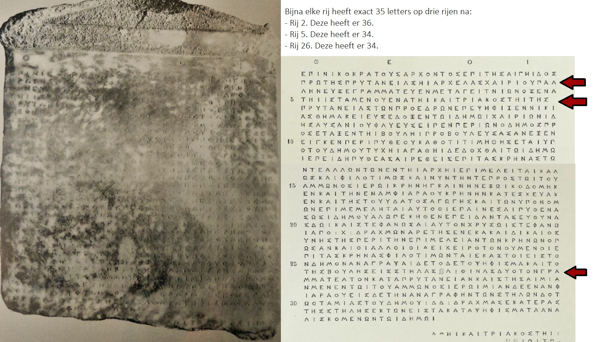

De inscriptie: tekst en vertaling
In onderstaande tabel is de inscriptie weergegeven. Hiernaast staat een Engelse vertaling van geprezen historicus en epigraaf: Stephen Lambert, verkregen via AIO: Attic Inscriptions online In de derde en laatste kolom van de tabel staat een korte samenvatting van elk gedeelte, aangevuld met enkele contextuele opmerkingen indien nodig.
| Grieks | Engelse vertaling | Opmerkingen |
|---|---|---|
| θεοί· | gods | Aanroep tot de goden: zo begon het overgrote gedeelte van de inscriptes |
| ἐπὶ Νικοκράτους ἄρχοντος, ἐπὶ τῆς Αἰγηίδος πρώτης πρυτανείας, ἧι Ἀρχέλας Χαιρίου Παλ- ληνεὺςX ἐγραμμάτευεν· Μεταγειτνιῶνος ἐνά- τηι ἱσταμένου· ἐνάτηι καὶ τριακοστῆι τῆς ∶ πρυτανείας· | In the archonship of Nikokrates (333/2), in the first prytany, of Aigeis, for which Archelas son of Chairias of Pallene was secretary. On the ninth of Metageitnion, the thirty-ninth of the prytany. | De oude Grieken hadden een ander dateringssysteem dan wij nu hebben. Zij dateerde aan de hand van de heersende archon: 'in het jaar dat Nikokrates archon was'. Een aantal historici hebben vervolgens uitgerekend aan de hand van lijsten en historische gegevens welk jaar dit precies was. Dit was 333/2 v.Chr volgens onze jaartelling. Waarom 333/2 v.Chr. en niet 333 v.Chr. of 332 v.Chr.? Dat komt omdat bij ons het jaar begint in januari. In het oude Griekenland begon dit rond augustus. Zo overlapt het oud-Griekse jaar met ons huidige jaar. |
| τῶν προέδρων ἐπεψήφιζεν Νικί- ας Θημακειεύς ἔδοξεν τῶι δήμωι Χαιριωνίδ- ης Λυσανίου Φλυεὺς εἶπεν· περὶ ὧν ὁ δῆμος πρ- oσέταξεν τῆι βουλῆι προβουλεύσασαν ἐξεν- ειγκε͂ν περὶ Πυθέου καθότι τιμηθήσεται ὑπ- ὸ τοῦ δήμου, τύχηι ἀγαθῆι, δεδόχθαι τῶι δήμω- ι· | Of the presiding committee Nikias of Themakos was putting to the vote. The People decided. Chairionides son of Lysanias of Phlya proposed: concerning the proposal that the People required the Council to formulate and bring forward about Pytheas, for him to be honoured by the People, for good fortune, the People shall decide: | Hier worden de mensen genoemd die betrokken waren bij het verzoek Pytheas te eren voor zijn werk. Het volk, de demos, heeft uiteindelijk besloten; Athene had immers een direct democratisch systeem. Zij koos er inderdaad voor om Pytheas te eren voor zijn werk. | ἐπειδὴ Πυθέας αἱρεθεὶς ἐπὶ τὰς κρήνας τῶ- ν τε ἄλλων τῶν ἐν τῆι ἀρχῆι ἐπιμελεῖται καλ- ῶς καὶ φιλοτίμως καὶ νῦν τήν τε πρὸς τῶι τοῦ Ἄμμωνος ἱερῶι κρήνηγ καινὴν ἐξωικοδόμηκ- εν καὶ τὴν ἐν Ἀμφιαράου κρήνην κατεσκεύακ- εν καὶ τῆς τοῦ ὕδατος ἀγωγῆς καὶ τῶν ὑπονόμ- ων ἐπιμεμέληται αὐτόθι, | since Pytheas, having been elected in charge of the water supply, is both fulfilling his other official duties well and with love of honour and has now both constructed a new fountain at the sanctuary of Ammon and built the fountain in the Amphiaraion and has taken care of the water channel and the underground conduits there, | Hier staat aangegeven dat Pytheas is gekozen voor deze functie. Vervolgens komt er een een korte lijst met Pytheas' daden. Dit zijn de redenen waarom Pytheas geprezen dient te worden. |
| ἐπαινέσαι Πυθέαν Σωσιδήμου Ἀλωπεκῆθεν ἐπειδὰν τὰς εὐθύνα- ς δῶι καὶ στεφανῶσαι αὐτὸν χρυσῶι στεφάνω- ι ἀπὸ ∶ Χ ∶ δραχμῶν ἀρετῆς ἕνεκα καὶ δικαιοσ- ύνης τῆς περὶ τὴν ἐπιμέλειαν τῶν κρηνῶν, ὅπ- ως ἂν καὶ οἱ ἄλλοι οἱ <ἀ>εὶ χειροτονούμενοι ἐ- πὶ τὰς κρήνας φιλοτιμῶνται ἕκαστοι εἰς τὸ- ν δῆμον· | ...to praise Pytheas son of Sosidemos of Alopeke,when he has rendered his accounts, and crown him with a gold crown of 1,000 drachmas for his excellence and justice in his management of the water supply, in order that others who are elected in charge of the water supply may each of them also show love of honour towards the People; | Zodra Pytheas de laatste puntjes op de 'i' heeft gezegd, zal hij een kroon krijgen van 1000 drachmae. |
| ἀναγράψαι δὲ τόδε τὸ ψήφισμα καὶ τὸ τῆς βουλῆς εἰς στήλας ∶ λιθίνας δύο τὸν γρα- μματέα τὸν κατὰ πρυτανείαν καὶ στῆσαι μία- ν μὲν ἐν τῶι τοῦ Ἄμμωνος ἱερῶι, μίαν δὲ ἐν Ἀνφ- ιαράου· εἰς δὲ τὴν ἀναγραφὴν τῶν στηλῶν δότ- ω ὁ ταμίας τοῦ δήμου ∶ ΔΔ ∶ δραχμὰς ἑκατέρας τῆς στήλης ἐκ τῶν εἰς τὰ κατὰ ψηφίσματα ἀνα- λισκομένων τῶι δήμωι vacat, 0.010 [ἔδοξεν τῆι βουλῆι· ὀγ]δόηι καὶ τριακοστῆι ∶ [τῆς πρυτανείας· βουλὴ ἐν β̣[ου]λ̣[ευτη]ρίωι·τῶν̣ [προέδρων ἐπεψήφιζεν — — — — — — ] | and the prytany secretary shall inscribe this decree and that of the Council on two stone stelai and stand one in the sanctuary of Ammon and one in that of Amphiaraos;and for inscribing the stelai let the treasurer of the People give 20 drachmas for each stele from the People’s fund for expenditure on decrees. | Als afsluiting wordt aangekondigd dat er twee stelai worden gemaakt en geplaatst in de heiligdommen waarvoor Pytheas goed werk had verricht. Een van deze stelai, heb je nu zojuist gezien, gelezen en geanalyseerd. |
De esthetische perfectie van een inscriptie
Hierboven hebben we de tekst besproken, maar laten we ook eens kijken naar de vormgeving van deze tekst. Dan zien we al snel dat de tekst op een zeer geordende manier in het marmer is gekrast. Alles staat netjes in een rij en de letters staan allemaal onder elkaar. Deze geordende stijl in inscripties wordt 'stoichedon' genoemd, wat in het Grieks: 'op een rij' betekent. De letters moesten zowel verticaal als horizontaal op gelijke rijen liggen: dit was een esthetisch ideaal. In onze inscriptie zien we dat duidelijk terugkomen: het is geschreven in een nagenoeg perfect stoichedon, enkele uitzonderingen daargelaten.
Antieke handschriften
Nu heeft iedereen een uniek en typerend handschrift. Dit gold ook voor vroeger. Er zijn verschillende handschriften te onderscheiden in inscripties. Historicus en epigraaf genaamd Stephen Tracy heeft jaren besteed aan het perfectioneren deze kunst: het ontdekken van epigrafische handschriften. Doordat verscheidene letters op een specifieke manier werden geschreven, was Tracy in staat de maker van onze inscriptie over Pytheas te duiden als dezelfde maker van een andere Atheense inscriptie. Zijn handschrift wordt gekenmerkt door onder meer:
- Diepliggende letters, waarvan de ronde letters nog dieper liggen;
- De alfa is redelijk breed;
- De omega is bijna gesloten van onderen;
- De middelste streep in de epsilon is aanzienlijk korter;
Als laatste, een opvallend kenmerk van deze inscriptie, zijn enkele afwijkende pi's. De bovenste streep steekt uit.

Dit is slechts een zeer bondig voorbeeld van een handschrift-analyse. Het laat echter zien hoe uniek een dergelijke inscriptie kan zijn en hoeveel historici wel niet kunnen aflezen van zo'n steen door heel secuur te werk te gaan. Dan blijkt dat het niet alleen loont om naar de inhoud van de inscriptie te kijken, maar ook ook naar de vormgeving ervan.